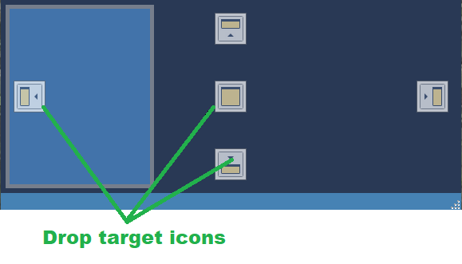
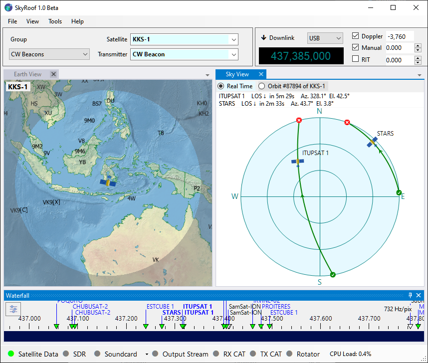
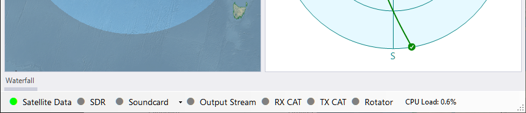
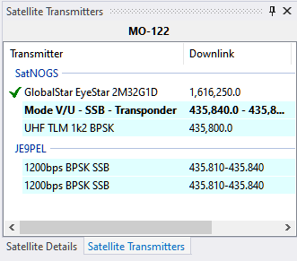

Configuring the Window Layout
The layout of SkyRoof's main window is under your full control. Any panel may be shown or hidden, docked anywhere in the window, or left floating.
Show and Hide
Show the panels using the menu commands in the View section, hide them using the same command again, or by clicking on the Close button on panel's caption bar.
Dock
To dock the panel, start dragging it by its caption bar. When the dragging starts, the drop target icons appear in the places where the panel may be docked:

Drop the panel on one of such icons. Drop it anywhere else to leave it floating.
Central Area
The central area of the window is usually occupied with the waterfall display. If you are not using an SDR and thus do not have a waterfall, you may want to use that area for something else, e.g., the Earth View Panel and Sky View Panel:

Note that the frequency scale is useful even without an SDR, in this case it could be docked at the bottom.
Auto-Hide
A panel may be switched to the auto-hide mode so that it does not occupy any space until you click on its tab:

Note the "Waterfall" tab in the bottom left corner of the screenshot above: when you click on it, the Waterfall panel temporarily slides into view. To enable auto-hide, click on the Auto-Hide button on the caption bar.
Tabbing
If you drop one panel over the other, they become tabbed, as Satellite Details Panel and Satellite Transmitters panel in the screenshot below:

Now you can switch between the panels by clicking on their tabs.